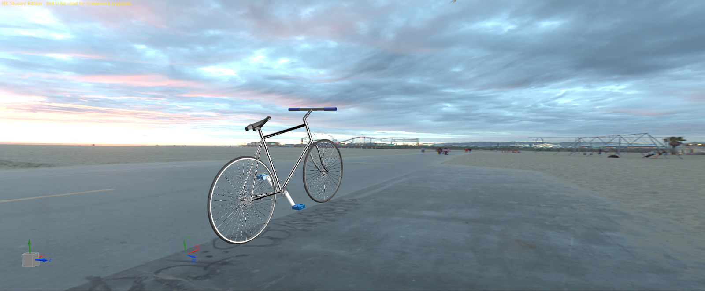
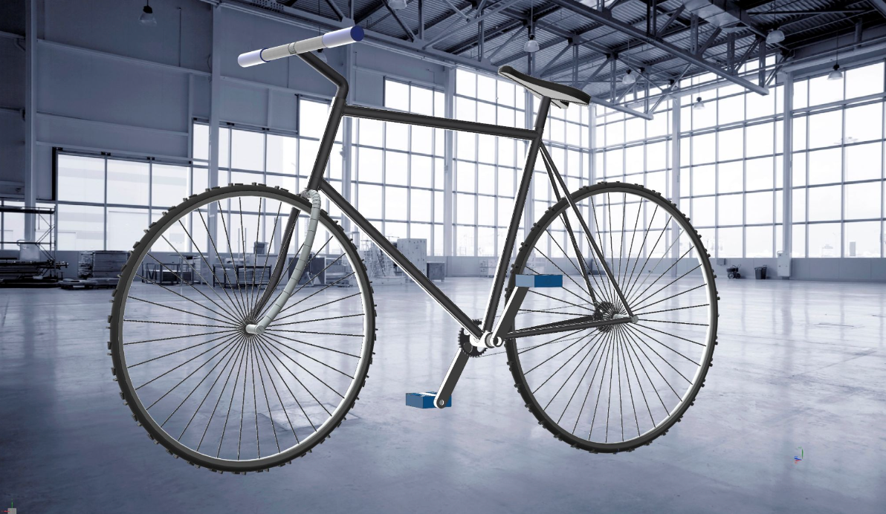
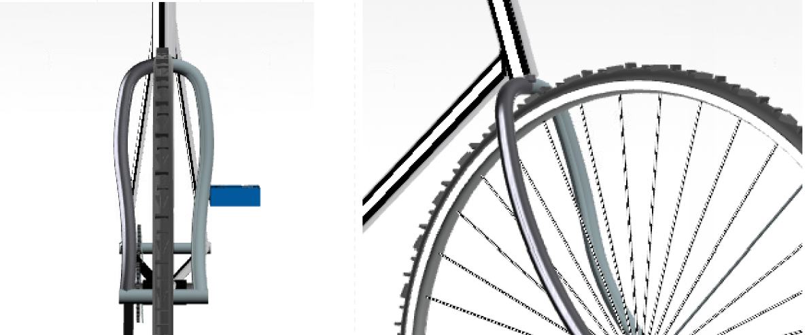
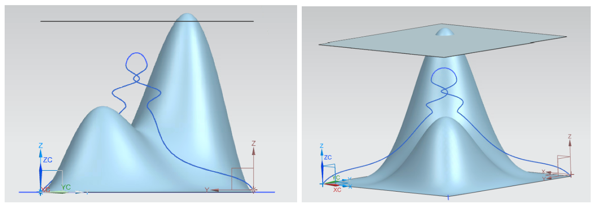
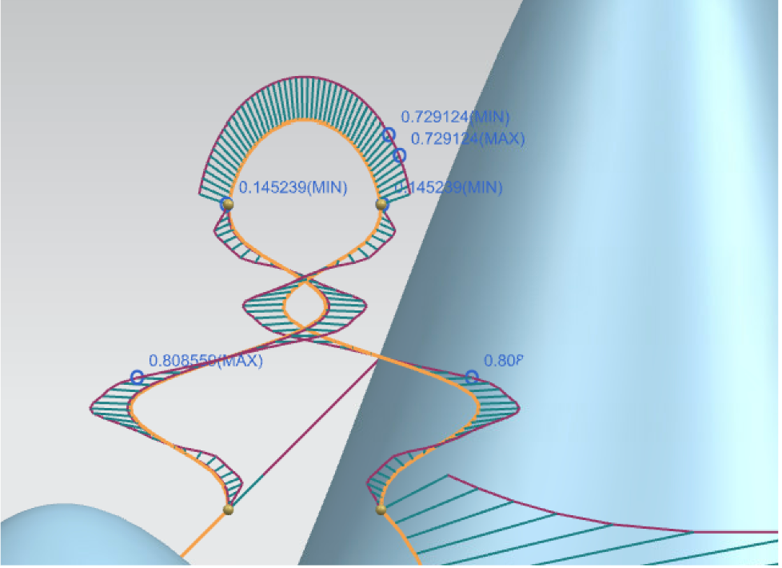
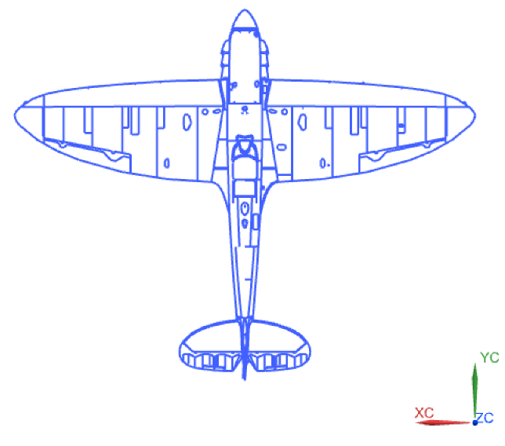
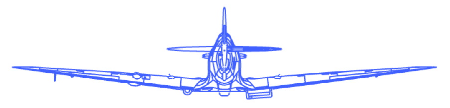
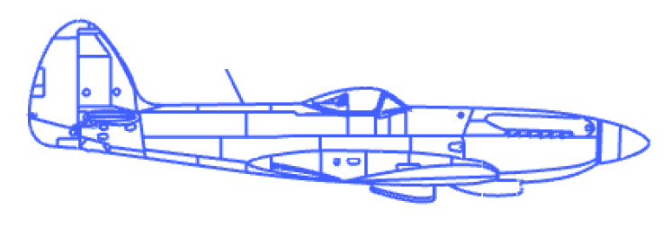
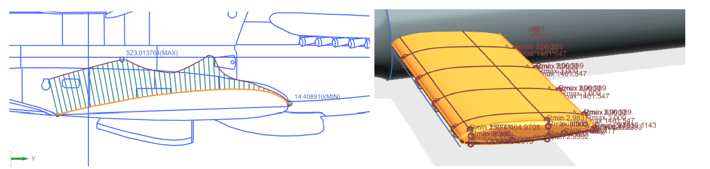

NX Projects
For my final project in UConn's NX CAD class, I selected the bicycle from our senior design project as the subject for modeling. I designed each of the components, including the frame, gears, pedals, and wheels, and combined them into a single assembly.



I based the geometry and components to the bicycle used in our Beta Prototype at Transcend Bicycles.


For this task, we plotted the flight path of the Spitfire plane between two mountains, ensuring it stayed within 1g force limits.


Another task in the NX class was to replicate a Spitfire plane in both 2D and 3D.


For this we had to compare the curvature of radius of the wing in our 2D model to that of our 3D model.